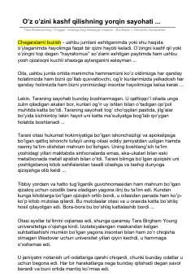

OOTara Vestoverning "O'qigan" kitobi asosida shaxsiy rivojlanish va ta'limning ahamiyati haqida tahliliy maqola.
Ushbu maqola Tara Vestoverning mashhur "O'qigan" (Educated) avtobiografik kitobiga bag'ishlangan bo'lib, og'ir muhitda ulg'ayib, ta'lim va o'z ustida ishlash orqali hayotini o'zgartirgan qizning ta'sirli sayohati haqida hikoya qiladi. Kitobdan olingan hayotiy saboqlar, qiyinchiliklarni yengish va shaxs sifatida shakllanish jarayoni tahlil qilingan.